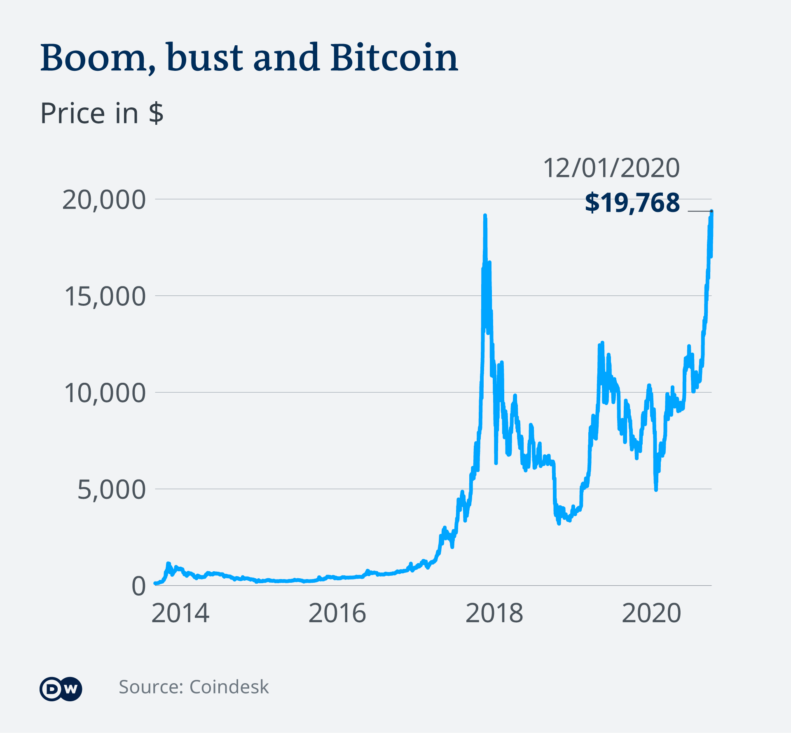

<!DOCTYPE html>
<html>
</html>
<head>
  <meta charset="utf-8">
  <meta http-equiv="X-UA-Compatible" content="IE=edge">
  <meta name="description" content="">
  <title>White-Rabbit-Hub</title>
  <link rel="icon" type="image/png" href="logo.png" sizes="16x16" />
  <meta name="viewport" content="width=device-width, initial-scale=1">
  <meta name="robots" content="all,follow">
  <!-- Bootstrap CSS-->
  <link rel="stylesheet" href="vendor/bootstrap/css/bootstrap.min.css">
  <!-- Font Awesome CSS-->
  <link rel="stylesheet" href="vendor/font-awesome/css/font-awesome.min.css">
  <!-- Google fonts - Roboto-->
  <link rel="stylesheet" href="https://fonts.googleapis.com/css?family=Roboto:400,300,700,400italic">
  <!-- owl carousel-->
  <link rel="stylesheet" href="vendor/owl.carousel/assets/owl.carousel.css">
  <link rel="stylesheet" href="vendor/owl.carousel/assets/owl.theme.default.css">
  <!-- theme stylesheet-->
  <link rel="stylesheet" href="css/style.default.css" id="theme-stylesheet">
  <!-- Custom stylesheet - for your changes-->
  <link rel="stylesheet" href="css/custom.css">
  <!-- Favicon-->
  <!-- Tweaks for older IEs--><!--[if lt IE 9]>
    <script src="https://oss.maxcdn.com/html5shiv/3.7.3/html5shiv.min.js"></script>
    <script src="https://oss.maxcdn.com/respond/1.4.2/respond.min.js"></script><![endif]-->
</head>
<body>
  <div id="all">
    <div class="container-fluid">
      <div class="row row-offcanvas row-offcanvas-left"> 
        <!--   *** SIDEBAR ***-->
        <div id="sidebar" class="col-md-4 col-lg-3 sidebar-offcanvas">
          <div class="sidebar-content">
            <h1 class="sidebar-heading"> <a href="index.html">CREATIVE_MINER</a></h1>
            <p class="sidebar-p">I am a full-stack dev expertise in MERN Stack and self-made Blockchain dev.</p>
            <p class="sidebar-p">Originally from Dehradun, currently in Pauri. </p>
            <ul class="sidebar-menu">
                <!-- Link-->
                <li class="sidebar-item"><a href="index.html" class="sidebar-link active">Home</a></li>
                <!-- Link-->
                <li class="sidebar-item"><a href="about.html" class="sidebar-link">About</a></li>
                <!-- Link-->
                <li class="sidebar-item"><a href="contact.html" class="sidebar-link">Cryptocurrency Fund</a></li>
            </ul>
            <p class="social">
              <a target="_blank" href="https://www.facebook.com/kunwar.shubhm" data-animate-hover="pulse" class="external facebook">
                <i class="fa fa-facebook" ></i></a
              ><a
                href="https://www.wa.link/ujl3ns" target="_blank"
                data-animate-hover="pulse"
                class="external gplus"
                ><i class="fa fa-whatsapp"></i></a
              >
              <a href="https://www.instagram.com/shubham_kunwar__/" target="_blank" title="" class="external instagram"
                ><i class="fa fa-instagram"></i></a
              >
              <a href=" mailto:skunwar.sk10@gmail.com?subject=Funds%20For%20Crypto%20Mining" target="_blank" data-animate-hover="pulse" class="email"
                ><i class="fa fa-envelope"></i
              ></a>
              <a href=" https://www.codegrepper.com/app/profile.php?id=57722" target="_blank" data-animate-hover="pulse" class="email"
                ><i class="fa fa-glide-g "></i
              ></a>
            </p>
            <div class="copyright text-center text-md-left">
              <p class="credit">&copy;2021 Shubham Kunwar|</p>
              <!-- Please do not remove the backlink to us, unless you support the development at http://bootstrapious.com/donate. It is part of the license conditions. Thanks for understanding :)        -->
            </div>
          </div>
        </div>
        <!--   *** SIDEBAR END ***  -->
        <!--   *** DETAIL ***-->
        <div class="col-md-8 col-lg-9 content-column white-background">
          <div class="small-navbar d-flex d-md-none">
            <button type="button" data-toggle="offcanvas" class="btn btn-outline-primary"> <i class="fa fa-align-left mr-2"></i>Menu</button>
            <h1 class="small-navbar-heading"> <a href="index.html">CREATIVE_MINER </a></h1>
          </div>
          <div class="row">
            <div class="col-xl-10">
              <div class="content-column-content">
                <h1>What Is Crypto Mining? How Cryptocurrency Mining Works</h1>
                <p class="lead">Mining in the crypto world is the process of keeping blockchain data in check. It involves hard work (done by computers) and results in a slow accumulation of resources – just like mining for minerals.  
 Over 70% of Bitcoin mining happens in China and recently crypto got bannned here.</p>
                <div id="main-slider" class="owl-carousel owl-theme">
                  <div class="item"></div>
                  <div class="item"></div>
                  <div class="item"></div>
                </div>
                <!-- /#main-slider-->
                <p>It’s important to understand that the cryptocurrency market itself is an alternative to the traditional banking system that we use globally. So, to better understand how crypto mining works, you first need to understand the difference between centralized and decentralized systems</p>
                <ol>
                  <li>The traditional centralized currency system in India operates through the use of computers, networks and technologies that are owned, operated and maintained by financial institutions. So, whenever we send money to a family member or a friend, that transaction goes through our bank.</li>
                  <li>A decentralized system, on the other hand (as illustrated in the right half of the graphic), operates using a network of separately owned, operated and maintained devices. They lend their resources to create this decentralized network and share the responsibility of verifying transactions, updating and maintaining redundant versions of the ledger simultaneously.</li>
                </ol>
                <blockquote class="blockquote">
                  <p class="mb-0">So, when we talk about distribution, what do we mean? Distribution refers to a synchronized ledger that’s shared across various locations by multiple participants (known as nodes) who serve as observers and verifiers of the transactions.</p>
                </blockquote>


                <h2>A STEP-BY-STEP LOOK AT THE CRYPTO MINING PROCESS</h2>
                <p>Okay, it’s time to take a really granular look at the cryptocurrency mining process and better understand how it works.

                </p>
                <ul>
                  <li>Nodes Verify Transactions Are Legitimate.</li>
                  <li>Separate Transactions Are Added to a List of Other Transactions to Form a Block.</li>
                  <li>A Hash and Other Types of Data Are Added to the Unconfirmed Block.</li>
                  <li>Miners Verify the Block’s Hash to Ensure the Block Is Legitimate.</li>
                  <li>Once the Block is Confirmed and the Block Gets Published in the Blockchain</li>
                </ul>

                <h2>Why Is Crypto Mining Such a Big Deal?
                </h2>
                <p>People love being able to use money digitally. Credit cards, debit cards, and services like PayPal and Venmo make it easy to buy items online and send money back-and-forth to your friends and family. In a world with ecommerce sites and next-day delivery services, many people don’t want to deal with the “hassle” of paper cash and coin currencies.

                </p>
                <ul>
                  <li>People Seek Greater Privacy and Control of Their Finances</li>
                  <li>Crypto Is Still New, Exciting and “Shiny”.</li>
                  <li>Easy to transfer amount in form of crypto.</li>
                  
                </ul>
                <h2>How much does it cost to mine crypto?
                </h2>
                <p>Like any other business venture, bitcoin miners must prepare a business plan to estimate its operation's total cost. The cost of mining one bitcoin depends on various factors. Some of these factors include:
                </p>
                <ul>
                  <li>Electricity costs in the country of mining </li>
                  <li>Hash rate of the rig</li>
                  <li>Required labor</li>
                  <li>Cost of the software</li>
                  <li>Mining pool fees</li>
                  <li>Possible depreciation of bitcoin</li>
                </ul>
                <h2>Should You Mine Cryptocurrency?
                </h2>
                <p>If you have a PC with a modern GPU, you should consider using it to make money while you aren’t using it yourself. It’s harder than you might think! <br>

                  ASIC mining is not for everyone. Unless you live in China, your electricity is probably too expensive for you to consider mining at a large scale. <br>
                  But don’t lose hope, there might be another way to profit off of your newfound mining knowledge.


                </p>
                <ul>
                  <li><strong>Proof-of-stake.</strong> Ethereum 2.0 promises to eliminate the need for expensive mining equipment. Instead of a race between the miners to secure the data, miners will stake Ether in order for the right to secure a portion of the transactions. </li>
                  <li><strong>Rent mining power.</strong> NiceHash is 1 of the largest mining pools in the world. They offer a service to rent mining power produced by machines in countries with low electricity costs. This way you can mine without ever getting technical.
                  </li>
                  <li><strong>Invest in the industry. </strong> This could become an option should companies such asNiceHash, Bitmain or Antminer ever become publicly traded.</li>
                  
                </ul>
                <h6>The cryptocurrency industry is still young, and mining has a long way to go before reaching maturation. Whether or not you should pursue an investment related to mining is up to your risk tolerance. Nearly any industry this new and underdeveloped is likely to contain a lot of uncertainty, but with uncertainty comes the potential for profit. Just be careful. </h6>
              </div>
            </div>
          </div>
        </div>
      </div>
    </div>
  </div>
  <!-- JavaScript files-->
  <script src="vendor/jquery/jquery.min.js"></script>
  <script src="vendor/popper.js/umd/popper.min.js"> </script>
  <script src="vendor/bootstrap/js/bootstrap.min.js"></script>
  <script src="vendor/jquery.cookie/jquery.cookie.js"> </script>
  <script src="vendor/owl.carousel/owl.carousel.min.js"></script>
  <script src="vendor/masonry-layout/masonry.pkgd.min.js"></script>
  <script src="js/front.js"></script>
</body>